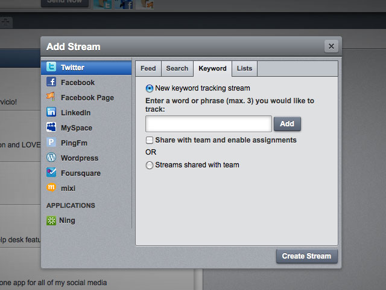
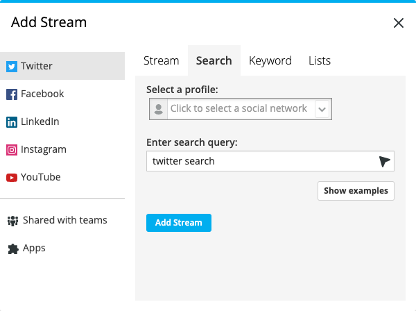

Hootsuite
Hootsuite was an incredible journey to be a part of. I joined as a front-end developer and helped create the dashboard and what would later become the social media streams, publisher, and composer. I was there for over a decade and worked on a variety of features, here are some of the highlights.
Layout
The first version of Hootsuite (Brightkit as it was initially called) was a vertical scrolling beast. This is a very hybrid style approach, including strong header and footer elements.
At the time the team was so small I had complete ownership over the frontend layout. I would take the PSD, slice it up in Photoshop and then figure out how to best implement the design. I used a modified BEM style to handle all the colours and sizes.
Funny how you see patterns repeat with utility classes coming back in the form of Tailwind albeit much easier/cleaner with pre-processing and intellisense.
Eventually we created a vertical scrolling "stream" layout, I got to figure out rounded corners before border-radius was a thing (lots of absolute positioning).
I went and updated the layout to flexbox once support was high enough amongst our enterprise users. It was always tough to be governed by the number of internet explorer users.
The more current version of the streams is horizontal scrolling with inner panels. Moving the tabs to a side menu was a huge change and required a lot of reworking of the existing code. And because this was a rolling update, the old and new code had to coexist.

Legacy Maintenance Pages
Written before css animations were a thing. These showcase the early make-it-happen attitude when working at a start-up. Look at those old-school shiny brand logos.
There's animated gifs and fun jquery that moves the backgrounds.
To keep these pages lightweight I kept them almost completely self contained, the particle library even japanese translations are included in the one file.
Broken Pipes
Wizard
Themes
While themes were something we always wanted it ended up being very tricky to handle early on. In the end I was juggling 3 different CSS folders full of duplicate files, once the project got larger this became unfeasible to maintain.
Ultimately, we reduced to one theme and the users didn't seem to mind. The lesson is, check with the users, maybe you've implemented something they don't even want.
Now with CSS variables and js context this would be much easier to implement.
User Interface
Not only did the dashboard change from pages to an SPA (single page app), the design updated from skeuomorphism to flat to a semi-brutalist. These were always challenging updates as legacy code had to update while creating the newer components we wanted to use.
Through all of this it had to be internally testable and wrapped in feature flags. When operating in this manner for a certain grace period we are essentially doubling the CSS and more. This can quickly bloat your code base if cleanup is also not taken into consideration.
The solution I settled on was a top level class that informs the interface/components. This way the styles are consistently handled like a boolean and cleanup can be completed much faster.
Design System / Brand Refresh
After creating an internal styleguide and running into many technical issues we eventually migrated to Storybook as it had finally matured to include all the features we were looking for.
I always took on the task of updating the legacy sections to keep them from falling into disrepair. The largest feature was streams, although another team had ownership, they were usually too busy working on a larger feature (Inbox) and were happy to let me take that particular task.
I saw this as a great opportunity to visually enhance the main section that many users encounter first after login.